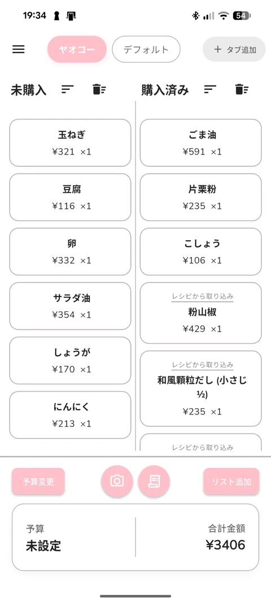
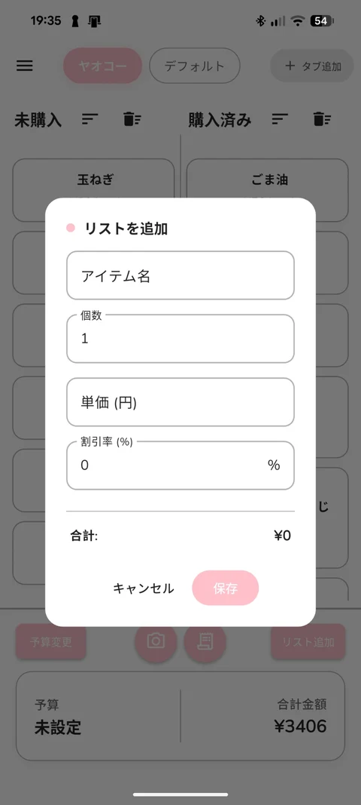
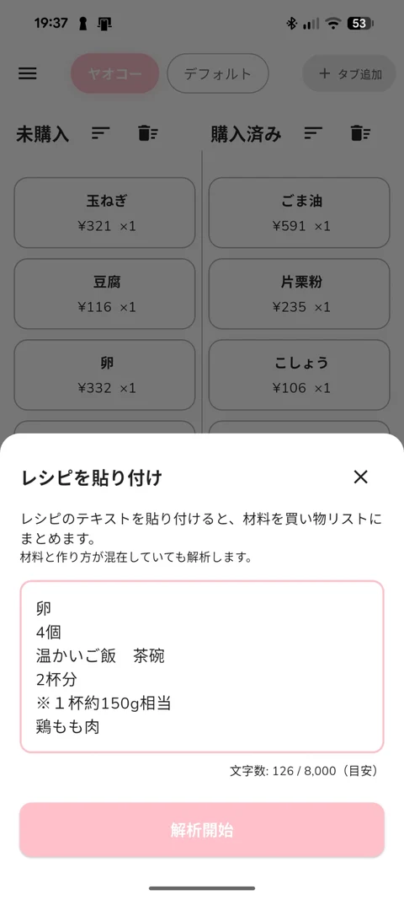
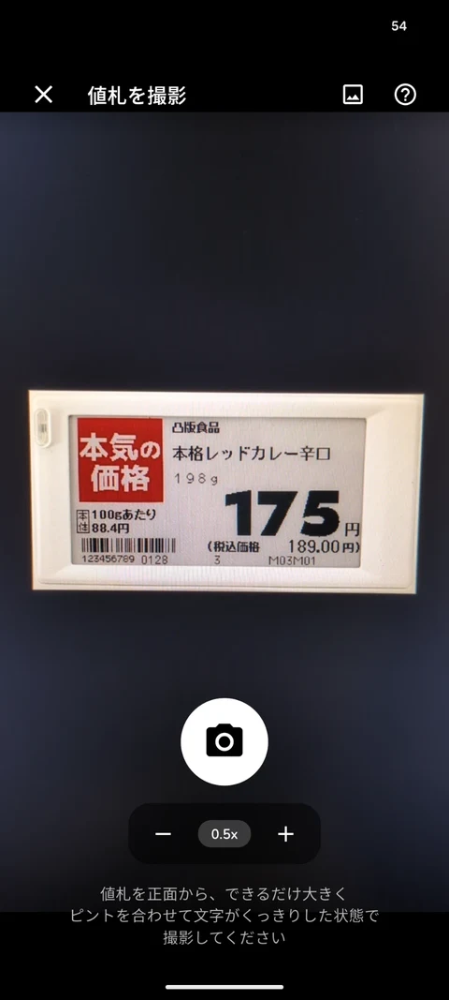

池田 健作
フロントエンドエンジニア志望。
RoastPlus と まいカゴ の2つを載せています。
まいカゴ
母が買い物のとき、予算内に収めるために電卓で計算しながらメモで買うものを確認していました。その行き来をなくすために、リストに入れた瞬間に合計が見えるアプリを作りました。Google Playで公開しています。




- 役割
- 企画・設計・実装・ストア公開・運用
- 期間
- 2025.06 — 運用中
- 開発
- AIコーディングエージェント（Cursor、Claude Code）を主に使用
- 主な機能
- リアルタイム合計、値札のカメラ読み取り（OCR）、複数デバイス同期、レシピ取り込み
自己紹介
前職で働きながら、まいカゴをバイブコーディングで作ったことをきっかけに、ソフトウェアやアプリの開発に興味を持ちました。それから約1年、学習を続けています。
今は基礎を固めるために、Excelを学び直しています。
仕事としては、フロントエンドエンジニアや、業務改善に関わる仕事を考えています。